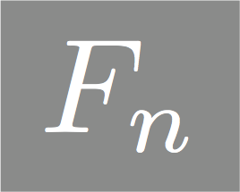

Basis
Inherits QString. Basis
provides an alphabet for the free group.
| int |
rank |
| QRegExp |
basisRegExp |
| QRegExp |
tightRegExp |
Basis
provides an alphabet for the free group.
This class is used to define a basis and contains the regular
expressions used in determining membership in the basis (basisRegExp)
used in transforming a word to its freely reduced representative (tightRegExp).
Default constructor for the class. This is equivalent to Basis(Fn_DefaultRank).
Constructs a basis of rank r. If r < Fn_MinRank or r
> Fn_MaxRank, then a basis
of rank Fn_DefaultRank
is constructed.
Returns the a copy of the private memeber basisRegExp. See QRegExp for more
details.
Changes private member rank to r. The
regular expressions basisRegExp an tightRegExp are appropriately set
to rank equal to r as well.
Returns private member rank.
Checks whether or not u is in the specified
basis. After checking whether or not u is
equal to Fn_Identity, this
function calls basisRegExp.exactmatch(u).
Returns the QChar corresponding to the inverse of x. If x is not in the
basis, then 0 (casted as a QChar) is returned. As the identity
element (ID) is treated as a QString and not a member of the basis,
this function cannot be applied to ID. See FnWord::inverse and ID for more details.
This is a global constant that provides a maximal basis. It is
constructed using Basis BASIS(Fn_MaxRank).
BACK TO TOP